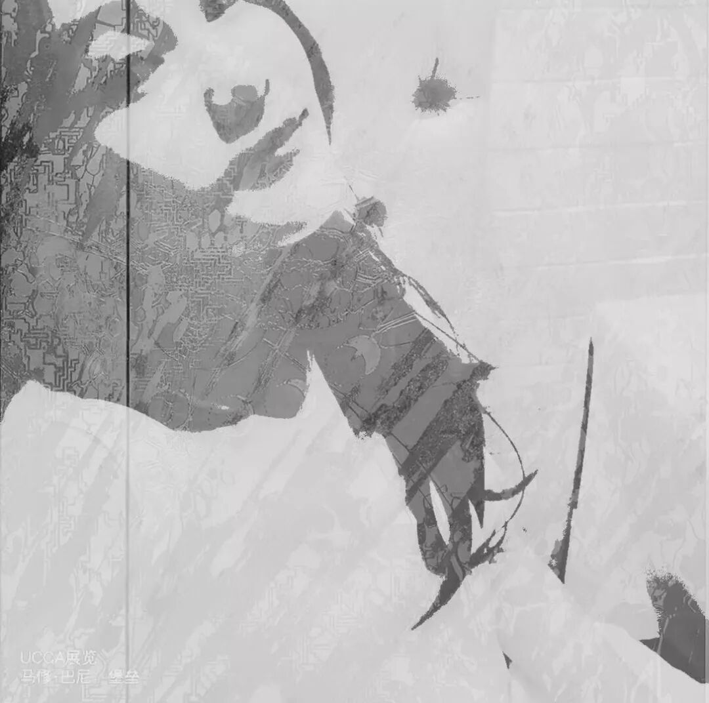
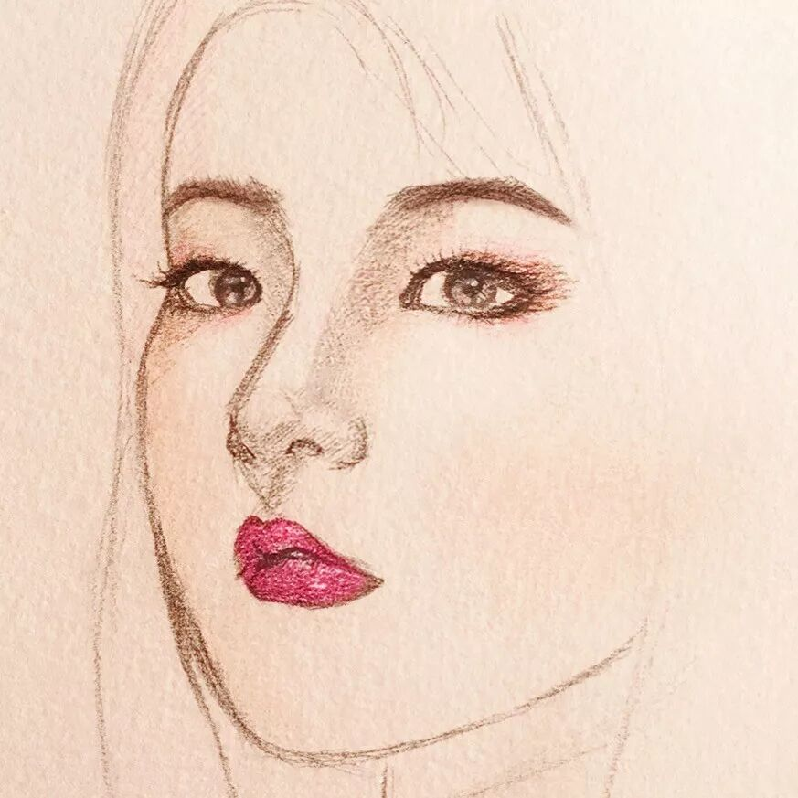
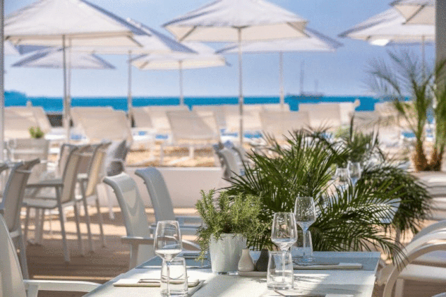
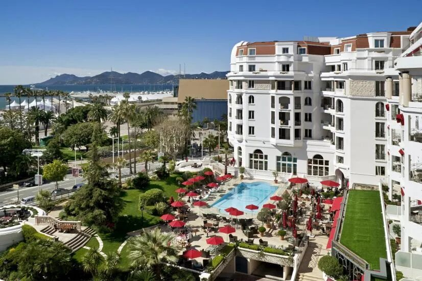
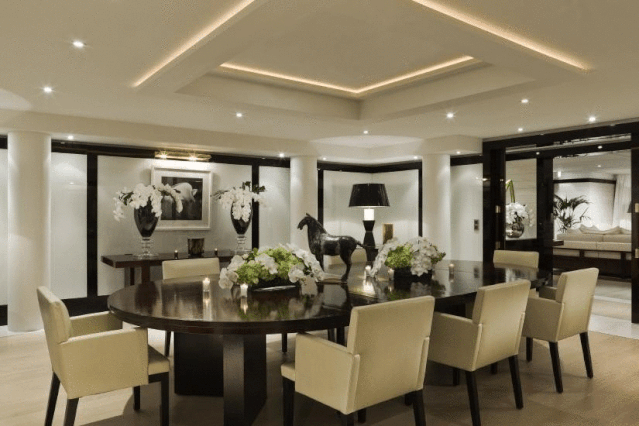
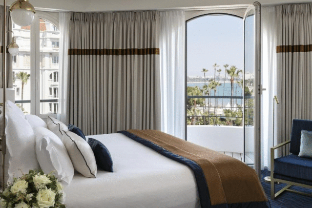
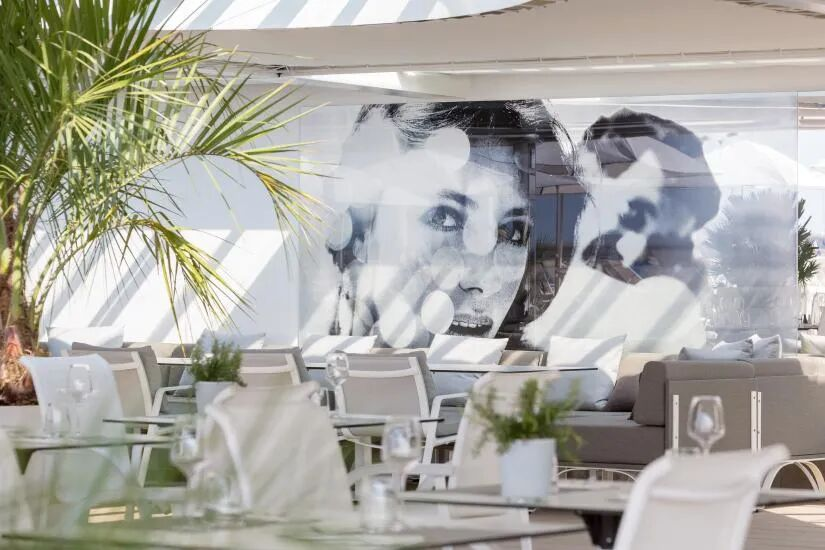
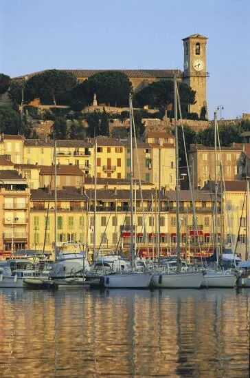
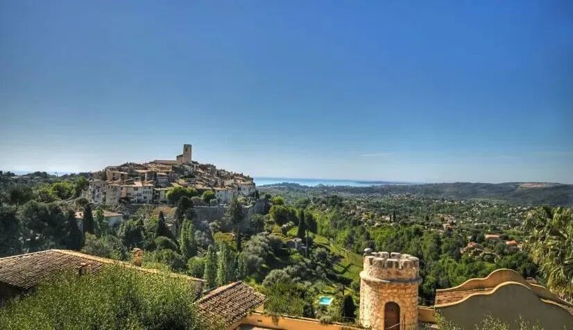
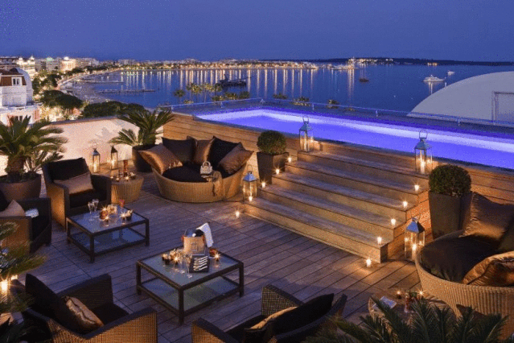

浮生半日：在戛纳度过一个自在浪漫周末

懒得写字的博主 | Deanna
因为懒得出门，酒店推开窗就要值回房价
X

本期嘉宾 | Doria
踏遍青山人未老，风景哪里都好


我一直觉得“浪漫”这个东西，不仅是在巴黎，而是散落在法国各处的。尤其是南法，是我更喜欢法国的一个部分：星星点点漫布在普罗旺斯大区的宁静小镇，迷人的海港马赛、尼斯，还有位于蔚蓝海岸的海滨小城 —— 戛纳。

电影节红毯聚集了来自全世界的闪光灯，名利场的故事数不胜数。但你是否见过浮华褪去后的戛纳，那个别样的，典雅的戛纳呢？
与你分享这家和电影宫心心相惜的巴里耶尔马杰斯迪克酒店 (Hotel Barriere Le Majestic Cannes), 以及那个退去闪光灯后，依然很美很浪漫的戛纳。

“
戛纳电影节期间最精贵的地方，除了红毯和电影宫内，就要数电影宫对面的Hotel Barriere Le Majestic 的阳台了。
—— Doria”

Doria告诉我，就算不是在一位难求的电影节期间，酒店的阳台也占据着黄金视角，几乎所有客房和套房都可俯瞰蔚蓝的大海。法式优雅在这里体现的淋漓尽致，很喜欢他们客房白色调和简单的黑色条纹相搭配的设计。包括酒店的私人沙滩、带有爵士乐队的法式餐厅、和大厅里的现代艺术品都展现了多元化的浪漫艺术。

如果奢侈一把入住巴里耶尔马杰斯迪克酒店的指定套房，可获一项“可怕的”权限：不限时在海滨大道沿岸的奢侈品商店购物，即使是夜间或周日，也可以由管家安排，拿到私人钥匙开启一段专属的购物体验。
如果厌倦了奢侈品，离戛纳电影宫不远的广场上，有周末复古集市。当地人非常爱逛，淘一个水晶杯或者复古胸针，和摊主聊聊它们的故事。与其说做生意，换一个角度形容成私人展览也很贴切，无论看官是否有意向买，热情的摊主们都无比欢迎顾客来鉴赏摆弄自己的商品，就一个设计独特的布包，他可以和你滔滔不绝的聊上一会儿，再请你吃一块巧克力。
Doria's Tips

“ 巴里耶尔集团也是是戛纳电影节酒店背后的大金主，自然酒店也和这场文化盛事互相成就，在酒店走廊墙上挂着一幅幅精美的黑白红毯照片,静止的光影会在眼前流动起来,踩在厚厚的地毯上，想象在另一个时空，一位位明星大咖在不同的时空里和你擦肩而过。 —— Doria”
欧洲去多了，多少会产生审美疲劳。好在如果把戛纳作为旅游目的地，或许不会是大部分人的首选，这也是戛纳一直浪漫自在的原因。每年7、8月份最热的季节，这里的平均温度也只有20几度。而充沛的日光会让海洋展现出蓝宝石般的璀璨色泽，海鸥飞跃在上空，虞美人随风摇摆的，成片游艇、帆船在海面上漂浮，海滨大道两边的棕榈树，沿着蜿蜒的海岸线伸展，这一切都铺成开一幅优美的画卷。

和其他海滨欧洲小镇一样，戛纳也有必不可少的城堡、教堂和要塞。值得一提的是圣玛格丽特岛(Sainte-Marguerite)，从码头坐船 15 分钟便可抵达，隔着绵绵的海洋，登上圣玛格丽特岛，这里仿佛一篇褪色的童话般把人带回中世纪。
“ 早在四世纪末,岛屿由修士建立，是著名的军事要塞，关押着“铁面人”。据说他在这里被囚禁11 年，囚室至今被保存供游客参观。岛上风景独好，泛着橙黄色的石块砖瓦和浅绿色的木门勾勒出童话里饱经风霜的小镇模样。全岛植满松树，走在宽敞的石子路上发出好听的沙沙声，望不见尽头的路面与两旁高耸参天的松树 形成特殊的景观。这里也是当地人周末的度假区，找一处静谧之地坐下,便可偷得浮生半日闲。 —— Doria”

距离圣玛格丽特不远的小岛圣何那瑞岛 (Ile St-Honorat)，更为幽静，修士们仍旧生活在那里，他们拥有自己的葡萄园，所产的葡萄酒品质极佳。很多饮客还会专程前往购买。
Doria's Tips

戛纳是很适合度过一个闲散周末的地方
慢下来去品味身边的点滴
才知道浪漫是自己给的
【END】
欢迎留言，与我聊聊偷得浮生半日闲的自在又浪漫的酒店

创作日期 | 2020 . 03 . 30